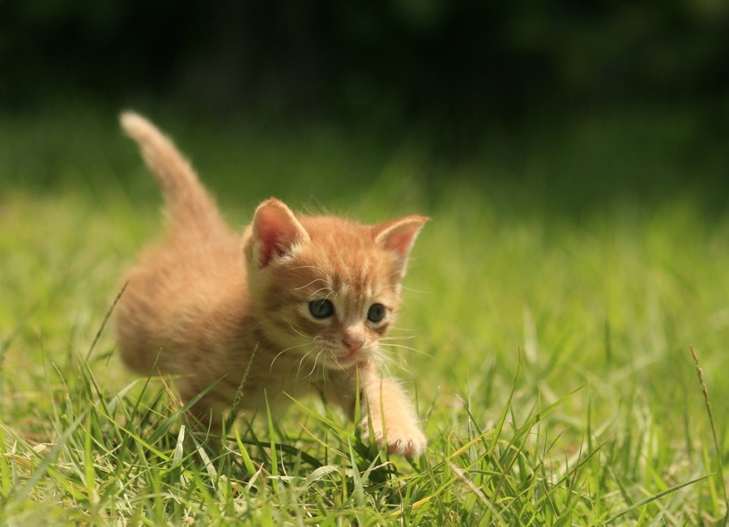

고양이는 식육목 고양이과 고양이속의 한 종이다.고양이의 신체적 특성과 습성은 다른 고양이과 동물들과 유사하게 빠른 반사신경, 탁월한 유연성, 날카로운 이빨, 넣고 꺼낼 수 있는 발톱 등이 있다
매우 긴 수면 시간을 가지고 있어 하루 종일 자는 시간이 굉장히 많으나 기본적으로 야생에서는 포식자 동물이라는 특성 상 박명박모성으로, 해뜰녘과 해질녘에 주로 행동한다. 또한 여타 고양잇과 동물들과 같이 고양이는 육식동물로, 야생에 사는 들고양이는 쥐, 다람쥐, 작은 새 등을 사냥해 잡아먹는다.
